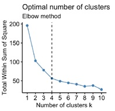
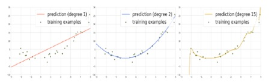
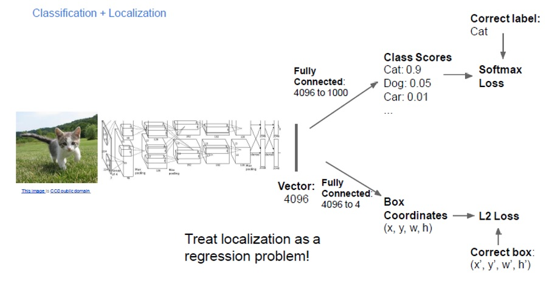
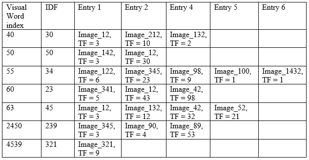

If we initialize the k-means clustering algorithm with the same number of clusters but with different starting positions for the centers, the algorithm will always converge to the same solution.
True
False
You are using k-means clustering in color space (RGB) to segment an image. However, you notice that although pixels of similar color are indeed clustered together into the same clusters, there are many discontiguous regions because these pixels are often not directly next to each other. A possible solution to that problem:
Run K-means one more time with different cluster centers initialization
Use a different color space
Concatenate the coordinates (x, y) with the color features as input to the k-means algorithm
Debug your code carefully as this issue should not happen
Given an image containing a cat, automatically labelling the image as "containing cat" (without specifying where the cat exists in the image) is considered an object detection task.
True
False
A Gaussian pyramid is a hierarchy of images. The bottom layer is an input image. The next layer is obtained by blurring the image in the previous layer and downsampling it, and so on. They are used in many computer vision algorithms such as SIFT.
True
False
One can make a visual descriptor rotationally invariant by assigning orientations to the key points and then rotating the patch to a canonical orientation. In SIFT this is done by constructing Histograms of Gradients in a neighborhood around the feature point and assigning the largest bin as the corresponding direction of the keypoint. Later, all detected features are rotated so that the corresponding orientations are vertically aligned.
True
False
You have designed an algorithm for classifying if an image contains a person or not. You obtain an accuracy of 98% on the training set and 33% on the validation set.
This is an instance of overfitting
This is an instance of underfitting
The training has failed
The training succeeded but the training and testing examples are sampled from different distributions
Given the graph below, what is a reasonable number to use for clusters?

4
1
7
10
2
We need class labels when performing clustering.
True
False
In regular shallow neural networks one needs to use a non-linear activation function between layers while in deep neural networks this is not needed.
True
False
In regression, the predicted output is discrete, this is in contrast to classification.
True
False
In mean shift clustering algorithm we find cluster centers as the modes of the probability density function of input features.
True
False
In general we need more manual work when building a labelled dataset for semantic image segmentation compared to the case of image classification.
True
False
Object localization is different than object detection because in object localization we could have multiple instances of the target object.
True
False
In the following figure:

All plots show a case of underfitting
Left plot is a case of underfitting, middle plot is a case of good fitting and right plot is a case of overfitting
Left plot is a case of overfitting, middle plot is a case of good fitting and right plot is a case of overfitting
Left plot is a case of underfitting, middle plot is a case of underfitting and right plot is a case of overfitting
None of the above
Viola Jones detector is originally developed to detect frontal faces but the same algorithm can be also used for profile detection and other objects.
True
False
Some of the reasons we use convnets instead of fully connected layers in images are computational efficiency (sharing of weights) and preserving spatial structure.
True
False
We can solve the object detection problem as a regression problem to find all boxes of objects in images.
True
False
The main idea behind resnet blocks is to add shortcuts in the network blocks so that we can learn identity mapping in the worst case scenario. This helps learning even when we increase number of layers.
True
False
In the case of L2 regularization we have two terms in the loss function: a data term and a regularization term. The regularization term is multiplied by a parameter, let’s call it “lambda”. If we increase lambda we are risking more overfitting.
True
False
Single shot detection (SSD) and You-only-look-once (YOLO) detection algorithms operate on regions extracted from a separate region proposal network (separate from the network that performs detection).
True
False
A condition for a point to be a corner feature in an image is that there is a large intensity gradient along the X direction only.
True
False
Using gradient-based feature descriptors does not guarantee invariance against linear illumination changes.
True
False
The goal of the L2 loss in the following architecture is to predict the location of the object of interest.

True
False
Being a template-based method, Viola Jones can be also very suitable for deformable objects.
True
False
Bag of words feature matching does not take into account spatial feature arrangement when matching images.
True
False
In this problem we are using an indexing approach to match a query image to a database of images.
- Suppose we already computed a set of visual words by K-means quantization, we have a total of 10,000 visual words (w1 through w10000)
- Suppose the query image has the following visual words: W40, W50
- Suppose we have 1 million images in the database, the table below shows the index containing visual words (only a portion of the table is shown), each visual word has an associated “inverse document frequency” (IDF). For each database image each image has a “term frequency” (TF) for the visual word also (given after the DB image name)
For the given query image, the top 3 matching database images using TF*IDF as score are:

10, 11, 50
12, 212, 142
212, 142, 132
122, 345, 765
None of the above
In designing cascaded object detection systems it is usually the case that the first detector in the cascade has high recall and possibly high false positive rate.
True
False
Select all valid solutions for improving data annotation quality.
Consensus / Multiple Annotation / “Wisdom of the Crowds”
Using a gold Standard
Using a second tier of workers who grade others”
You are building an image classifier for a new set of classes for which there is no existing classifier. You want to start from an already trained classifier, you select the Resnet trained on the imagenet dataset. If you have a small number of labelled images in your dataset a good option would be to fine tune many layers in the already trained Resnet classifier.
True
False
Random forest classifier is an example of an ensemble classifier methods.
True
False
Running a detector through an image results in many possible overlapping boxes with different detection scores, a popular method to select the best detection window(s) is called Non-maxima suppression.
True
False
The main purpose of 1x1 convolution is to:
Perform dimensionality reduction
This is not a valid operation, doing a convolution with a kernel size of 1 does not have any effect
I don’t think we studied this in computer vision
1x1 convolution is an approximate way for performing 3x3 convolution
The goal of building a vocabulary of visual words is:
Enabling faster search of matching visual features between a query image and database images
Enabling matching visual features between a query image and database images
Building a vocabulary of visual words will be a key step in building a visual dictionary
None of the above
We expect that all matching keypoints between two images of the same non-rigid object to agree on the same geometric transformation.
True
False
For an image location to qualify as corner the following must be statisifed (select the most appropriate response)
there is low image gradient in both directions
there is high image gradient in both directions
there is high image gradient in the horitzontal direction
there is high image gradient in the vertical direction
In regression the predicted label is.
Continuous
Discrete
can be discrete or continuous
None of the provided answers
Lapplacian of Gaussian is an approximation of Difference-Of-Gaussians.
True
False
In TF IDF scoring the goal of IDF is to decrease the weight of very common visual words when matching images.
True
False
The following are the steps that are repeated during RANSAC algorithm to find most appropriate image transformation based on keypoint matches.
1. Sample (randomly) the number of points required to fit the model
2. Score by the fraction of inliers within a preset threshold of the model
3. Solve for model parameters using samples
The correct order of applyibg these steps is:
1,3,2
1,2,3
3,2,1
3,1,2
[choose the most appropriate answer] In SIFT, we build a ... to compute the dominant orientation at a keypoint.
gradient orientation histogram
color intensity histogram
scale space pyramid
multiple descriptors
The following is true when a classifier suffers from overfitting
Testing error is high
Training error is high
It has high variance
It has high bias
The main issue in bag of visual words matching
We lose the order of visual words when matching two images
None of the answers is correct
Bag of words matching is very expensive to compute
Bag of words matching is very expensive in storage